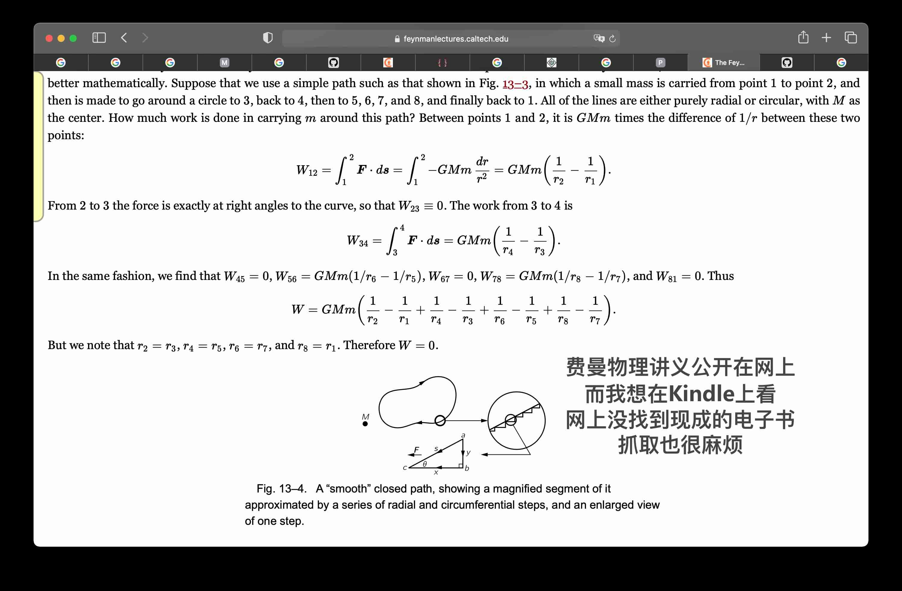
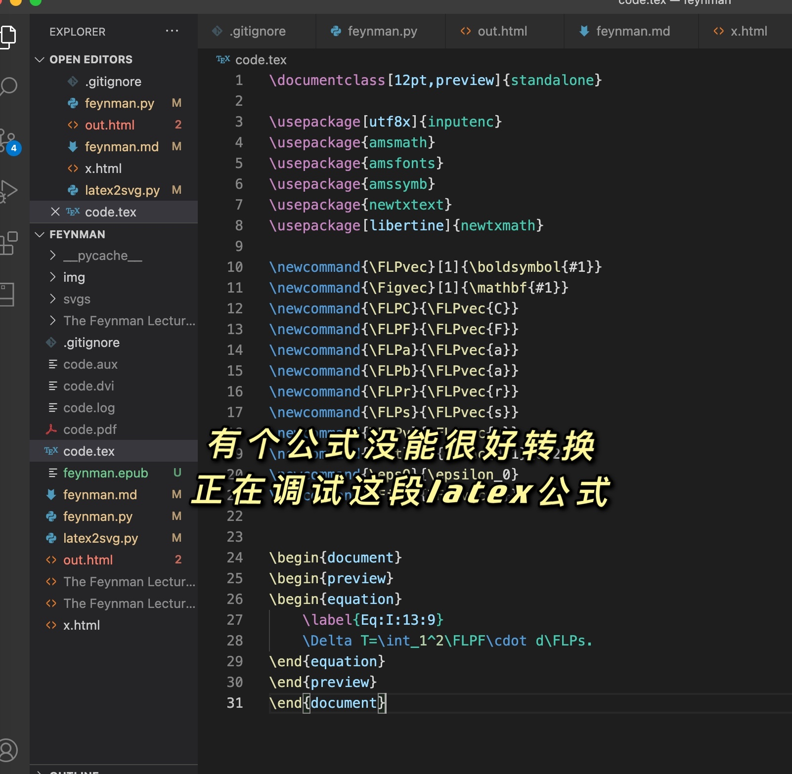
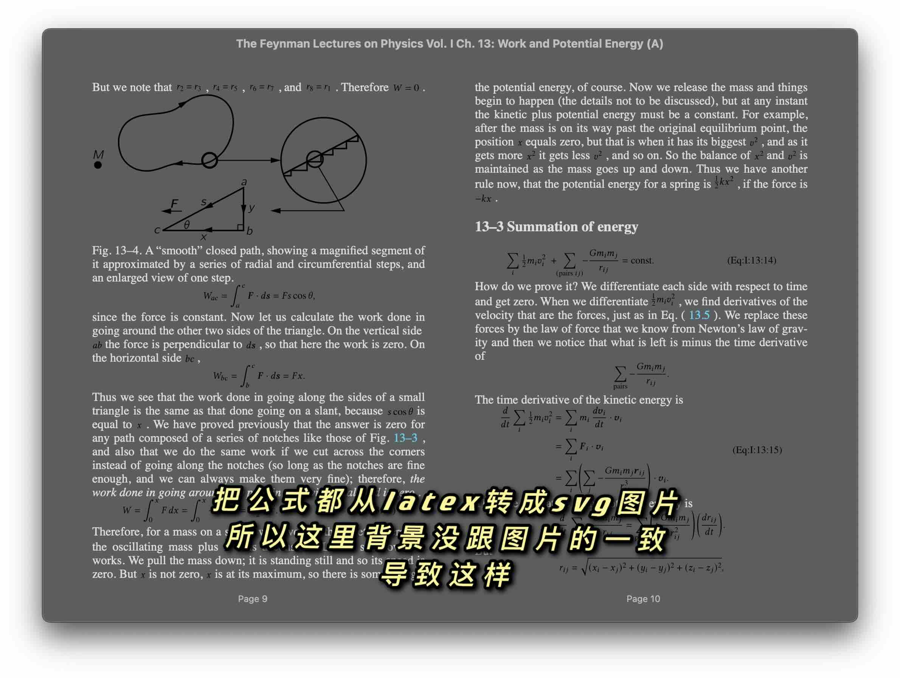
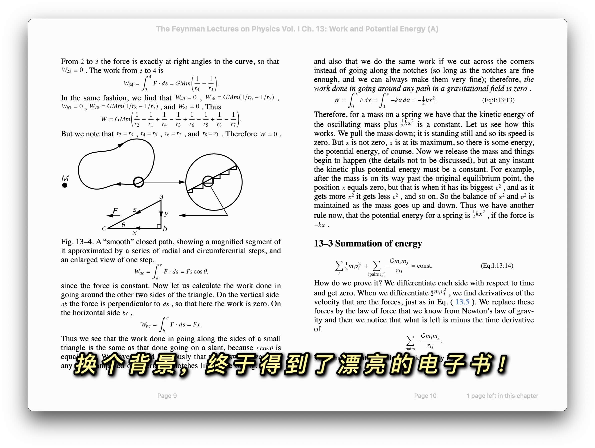
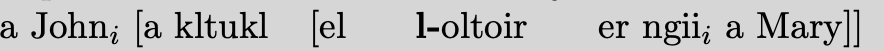

mathjax2mobi：MathJax HTMLを電子書籍に変換 | オリジナル、AI翻訳
プロジェクト概要
まず、プロジェクトの概要について簡単に説明します。





プロジェクトを終えて、少し嬉しい気持ちになりました。こんな言葉を書き留めました。
一日中コードを書いて、ついに美しいファインマン物理学講義の電子書籍を手に入れました！ファインマン物理学講義はオンラインで公開されており、latexでレンダリングされています。latexは論文を書くのによく使われ、数学の数式を美しくレンダリングします。オンラインで公開する際には、mathjaxというライブラリが使われています。これはlatexのソースコードをhtmlコードに変換し、多くのdivやspanタグを生成します。しかし、電子書籍ではこの方法がサポートされていません。そこで、ウェブページをスクレイピングし、mathjaxのレンダリングを逆にして、それをsvg画像に置き換えるというアイデアを思いつきました。いくつかの問題が発生しました。一つは、ソースコードに多くのlatexカスタムマクロがあり、それを追加する必要があったことです。もう一つは、多くのsvgを埋め込むと問題が発生することです。単一のsvgであれば問題ありませんが、多数の場合には問題が発生します。これはおそらくブラウザとsvgの奇妙なバグによるものです。この場合、svgをファイルとして保存し、imgタグで読み込むことで解決できます。数式には2種類あり、一つはテキスト中の数式、もう一つは単独の行の数式です。こうして、最終的に美しい電子書籍が完成しました！
調査した資料
ここでは、プロジェクトの過程でアクセスした資料を記録しています。これはチュートリアルであるため、学生にプロジェクトを進める際の体験を大まかに示しています。


プロジェクトの開始
ファインマン物理学講義は、すでにオンラインで公開されており、誰でも読むことができます。私はそれをKindleで読みたいと思っています。しかし、多くの数学式が含まれているため、元の原稿はおそらくlatexで作成されたものでしょう。ウェブページ上でlatex形式の内容を表示するために、mathjaxというライブラリが使用されています。
例えば、以下のような例を考えてみましょう。
<span class="MathJax_Preview" style="color: inherit; display: none;">
</span>
<div class="MathJax_Display">
<span class="MathJax MathJax_FullWidth" id="MathJax-Element-10-Frame" tabindex="0" style="">
<span class="mi" id="MathJax-Span-159" style="font-family: MathJax_Math-italic;">d<span style="display: inline-block; overflow: hidden; height: 1px; width: 0.003em;">
</span>
</span>
</div>
<script type="math/tex; mode=display" id="MathJax-Element-10">\begin{equation}
\label{Eq:I:13:3}
dT/dt = Fv.
\end{equation}
</script>
上記のコードは、MathJaxを使用して数式を表示するためのHTMLとLaTeXの組み合わせです。数式は以下のように表示されます：
[ \begin{equation} \label{Eq:I:13:3} \frac{dT}{dt} = Fv. \end{equation} ]
この数式は、時間に対する温度の変化率（( \frac{dT}{dt} )）が力（( F )）と速度（( v )）の積に等しいことを表しています。
以下は抜粋したhtmlコードの一部です。このhtmlコードのブロック内では、scriptタグの下にlatexのテキストがそのまま記述されています。mathjaxはこれを多くのspanに変換して表示します。
現在、私たちには一つのアイデアがあります。それは、mathjaxの表示方法をsvg画像に変更することです。
GitHub で tuxu/latex2svg というプロジェクトを見つけました。
from latex2svg import latex2svg
out = latex2svg(r'\( e^{i \pi} + 1 = 0 \)')
print(out['depth'])
print(out['svg'])
実行してみましたが、エラーが発生しました。
raise RuntimeError('latexが見つかりません')
RuntimeError: latexが見つかりません
コードを見てみましょう。
# LaTeXを実行してDVIファイルを作成
try:
ret = subprocess.run(shlex.split(params['latex_cmd']+' code.tex'),
stdout=subprocess.PIPE, stderr=subprocess.PIPE,
cwd=working_directory)
ret.check_returncode()
except FileNotFoundError:
raise RuntimeError('latexが見つかりません')
これもlatexコマンドに依存していることがわかりました。
インストールしてみましょう。
brew install --cask mactex
==> 注意事項
MacTex CLIツールのインストールを有効にするには、ターミナルウィンドウを再起動する必要があります。
または、BashおよびZshユーザーは次のコマンドを実行できます:
eval "$(/usr/libexec/path_helper)"
==> http://mirror.ctan.org/systems/mac/mactex/mactex-20200407.pkg をダウンロード中
==> https://mirrors.aliyun.com/CTAN/systems/mac/mactex/mactex-20200407.pkg からダウンロード中
######################################################################## 100.0%
すべての依存関係が満たされています。
==> Cask mactex をインストール中
==> mactex のインストーラーを実行中; パスワードが必要な場合があります。
installer: パッケージ名は MacTeX です
installer: 選択変更ファイル '/private/tmp/choices20210315-4643-5884ro.xml' が適用されました
installer: ベースパス / にインストール中
installer: インストールは成功しました。
🍺 mactex は正常にインストールされました！
インストールが成功しました。
% latex
This is pdfTeX, Version 3.14159265-2.6-1.40.21 (TeX Live 2020) (preloaded format=latex)
restricted \write18 enabled.
**
この出力は、LaTeXが使用しているpdfTeXエンジンのバージョン情報を示しています。具体的には、TeX Live 2020に含まれるpdfTeXのバージョン3.14159265-2.6-1.40.21が使用されており、\write18が制限付きで有効になっていることがわかります。
out = latex2svg(r'\( e^{i \pi} + 1 = 0 \)')
print(out['depth'])
print(out['svg'])
このコードは、LaTeX形式の数式 \( e^{i \pi} + 1 = 0 \) をSVG画像に変換し、その結果の深さ（depth）とSVGデータ（svg）を出力します。
svg = open('1.svg', 'w')
svg.write(out['svg'])
svg.close()
svgを生成できるようになりました。
そこで、mathjaxから得られるlatexテキストをすべて生成してみることにしました。
from bs4 import BeautifulSoup
from latex2svg import latex2svg
file = open('The Feynman Lectures on Physics Vol. I Ch. 13_ Work and Potential Energy (A).html')
content = file.read()
soup = BeautifulSoup(content)
mathjaxs = soup.findAll('script', {'type': 'math/tex'})
for mathjax in mathjaxs:
print(mathjax.string)
out = latex2svg(mathjax.string)
print(out['svg'])
残念ながらエラーが発生しました。
raise CalledProcessError(self.returncode, self.args, self.stdout,
subprocess.CalledProcessError: コマンド '['latex', '-interaction', 'nonstopmode', '-halt-on-error', 'code.tex']' がゼロ以外の終了ステータス 1 を返しました。
具体的にどの式が間違っているのでしょうか。
\tfrac{1}{2}mv^2
このLaTeXコードは、運動エネルギーを表す式を分数形式で表示するものです。\tfracは、分数を小さなサイズで表示するためのコマンドです。この式は、質量(m)と速度(v)の2乗に比例する運動エネルギーを表しています。
LaTeX
LaTeX（ラテック、レイテック、ラテフ）は、文書作成システムの一つで、特に数式や学術論文の作成に適しています。LaTeXは、プレーンテキスト形式で文書を作成し、それをコンパイルすることで高品質のPDFやその他の形式の文書を生成します。以下は、LaTeXの基本的な使用例です。
基本的なLaTeX文書の例
\documentclass{article}
\usepackage[utf8]{inputenc}
\title{LaTeXの基本}
\author{著者名}
\date{\today}
\begin{document}
\maketitle
\section{はじめに}
これはLaTeXの基本的な文書です。LaTeXを使うと、数式や表、図を簡単に挿入できます。
\section{数式の例}
LaTeXでは、数式を美しく表示できます。例えば、二次方程式の解は次のように表されます。
\[
x = \frac{-b \pm \sqrt{b^2 - 4ac}}{2a}
\]
\section{おわりに}
LaTeXは、学術文書や技術文書の作成に非常に強力なツールです。ぜひ活用してみてください。
\end{document}
コンパイル方法
上記のLaTeX文書をコンパイルするには、以下の手順を実行します。
- テキストエディタで
.texファイルを作成し、上記のコードを保存します。 -
ターミナルまたはコマンドプロンプトで、以下のコマンドを実行します。
pdflatex example.tex - これにより、
example.pdfという名前のPDFファイルが生成されます。
参考資料
- LaTeXプロジェクト
- Overleaf - オンラインLaTeXエディタ
LaTeXは、初めて使う人には少し難しいかもしれませんが、一度慣れるとその強力な機能を活用できるようになります。ぜひ挑戦してみてください！
latexを学びましょう。
\documentclass[12pt]{article}
\usepackage{lingmacros}
\usepackage{tree-dvips}
\begin{document}
\section*{私の論文に関するメモ}
トピック化の例を含めることを忘れないでください。 以下のようになります：
{\small \enumsentence{文主語からの主題化：\ \shortex{7}{a John$_i$ [a & kltukl & [el & {\bf l-}oltoir & er & ngii$_i$ & a Mary]]} { & {\bf R-}clear & {\sc comp} & {\bf IR}.{\sc 3s}-愛する & P & 彼を & } {John, (それは) Maryが(彼を)愛していることが明らかだ。}} }
\subsection*{トピック化の扱い方}
私は以下のような木構造（\ex{1}）を仮定します。
{\small \enumsentence{A$’$ 投射の構造:\ [2ex] \begin{tabular}[t]{cccc} & \node{i}{CP}\ [2ex] \node{ii}{Spec} & &\node{iii}{C$’$}\ [2ex] &\node{iv}{C} & & \node{v}{SAgrP} \end{tabular} \nodeconnect{i}{ii} \nodeconnect{i}{iii} \nodeconnect{iii}{iv} \nodeconnect{iii}{v} } }
\subsection*{ムード}
話題がある場合やWH移動がある場合に、ムードが変化します。非主語の話題やComp内のWH句があるときのムードは\emph{非現実形}（Irrealis）です。主語の話題やWH句があるときのムードは\emph{現実形}（Realis）です。
\end{document}
オンラインで見つけたlatexのサンプルソースコードです。
% latex code.tex
This is pdfTeX, Version 3.14159265-2.6-1.40.21 (TeX Live 2020) (preloaded format=latex)
restricted \write18 enabled.
entering extended mode
(./code.tex
LaTeX2e <2020-02-02> patch level 5
L3 programming layer <2020-03-06>
(/usr/local/texlive/2020/texmf-dist/tex/latex/base/article.cls
Document Class: article 2019/12/20 v1.4l Standard LaTeX document class
(/usr/local/texlive/2020/texmf-dist/tex/latex/base/size12.clo))
(/usr/local/texlive/2020/texmf-dist/tex/latex/tree-dvips/lingmacros.sty)
(/usr/local/texlive/2020/texmf-dist/tex/latex/tree-dvips/tree-dvips.sty
tree-dvips version .91 of May 16, 1995
) (/usr/local/texlive/2020/texmf-dist/tex/latex/l3backend/l3backend-dvips.def)
(./code.aux) [1] (./code.aux) )
Output written on code.dvi (1 page, 3416 bytes).
Transcript written on code.log.

ソースコードとレンダリング後の結果を見比べて、何が学べるか見てみましょう。
\begin{document}
\end{document}
このようにしてドキュメントをラップします。
\section*{私の論文のためのメモ}
これはsectionの見出しの始まりを示しています。
\subsection*{トピック化の扱い方}
これはサブタイトルを表します。
\shortex{7}{a John$_i$ [a & kltukl & [el &
{\bf l-}oltoir & er & ngii$_i$ & a Mary]]}
このコードは、構文解析や言語学の研究で使用される例文を示しています。具体的には、JohnとMaryの関係を表す構造を表しています。コード内の記号やラベルは、特定の文法規則や関係を示すために使用されています。

$_i$ は下付き文字を表すために使用されます。{\bf l-} は太字を表すために使用されます。
\enumsentence{A$'$ 投射の構造:\\ [2ex]
\begin{tabular}[t]{cccc}
& \node{i}{CP}\\ [2ex]
\node{ii}{Spec} & &\node{iii}{C$'$}\\ [2ex]
&\node{iv}{C} & & \node{v}{SAgrP}
\end{tabular}
\nodeconnect{i}{ii}
\nodeconnect{i}{iii}
\nodeconnect{iii}{iv}
\nodeconnect{iii}{v}
}

nodeconnect が接続を表すことに注意してください。
LaTeX を SVG に変換する
プロジェクトを続けます。
\documentclass[16pt]{article}
\usepackage{amsmath}
\begin{document}
[\tfrac{1}{2}mv^2]
\end{document}

これにより、正しくレンダリングされます。コード内でレンダリングされないのは、\usepackage{amsmath}が追加されていないためかもしれません。
\documentclass[12pt,preview]{standalone}
\usepackage[utf8x]{inputenc}
\usepackage{amsmath}
\usepackage{amsfonts}
\usepackage{amssymb}
\usepackage{newtxtext}
\usepackage[libertine]{newtxmath}
\begin{document}
\begin{preview}
\tfrac{1}{2}mv^2
\end{preview}
\end{document}
! $ が不足しています。
<挿入されたテキスト>
$
l.12 \tfrac{1}{2}
mv^2
このようにするとエラーが発生します。以下のように変更すればうまくいきます。
\[\tfrac{1}{2}mv^2\]
このLaTeXコードは、運動エネルギーを表す数式を表示するものです。具体的には、質量 ( m ) と速度 ( v ) の物体の運動エネルギーを計算する式です。数式は以下のように表示されます：
[ \tfrac{1}{2}mv^2 ]
この式は、物体の運動エネルギーが質量と速度の二乗に比例することを示しています。
さまざまな試行錯誤を行います。
from bs4 import BeautifulSoup
from latex2svg import latex2svg
file = open('The Feynman Lectures on Physics Vol. I Ch. 13_ Work and Potential Energy (A).html')
content = file.read()
soup = BeautifulSoup(content, features="lxml")
mathjaxs = soup.findAll('script', {'type': 'math/tex'})
for mathjax in mathjaxs:
print(mathjax.string)
wrap = '$' + mathjax.string + '$'
# if 'frac' in mathjax.string:
# wrap = '$' + mathjax.string + '$'
if 'FLP' in mathjax.string:
continue
elif 'Fig' in mathjax.string:
continue
elif 'eps' in mathjax.string:
continue
out = latex2svg(wrap)
# print(out)
node = BeautifulSoup(out['svg'], features="lxml")
svg = node.find('svg')
mathjax.insert_after(svg)
# print(out['svg'])
# break
# mathjax.replaceWith(out['svg'])
# print(dir(mathjax))
# break
# out = latex2svg(wrap)
# print(out['svg'])
このコードは、HTML内のMathJax形式の数式をSVGに変換して挿入する処理を行っています。以下に日本語で説明します。
soup.findAll('script', {'type': 'math/tex'})で、HTML内のMathJax形式の数式をすべて取得します。- 各数式に対して、以下の処理を行います：
- 数式の文字列を表示します。
- 数式の前後に
$を追加して、LaTeX形式の数式を作成します。 - 数式に特定の文字列（’FLP’、’Fig’、’eps’）が含まれている場合、その数式はスキップします。
latex2svg関数を使用して、LaTeX形式の数式をSVGに変換します。- 変換されたSVGをBeautifulSoupで解析し、
svgタグを取得します。 - 元のMathJax数式の後に、変換されたSVGを挿入します。
このコードは、MathJax形式の数式をSVGに変換してHTMLに挿入するためのものです。コメントアウトされた部分は、デバッグや追加の処理を行うためのもので、現在は無効化されています。
# print(len(soup.contents))
output_file = open('out.html', 'w')
output_file.write(soup.prettify())
output_file.close()
# print(soup.contents)
上記のコードは、BeautifulSoupオブジェクトsoupの内容を整形してHTMLファイルとして保存するものです。各ステップの説明は以下の通りです：
print(len(soup.contents))soup.contentsは、soupオブジェクトの直接の子要素をリストとして返します。この行はそのリストの長さ（要素数）を出力しますが、コメントアウトされているため実行されません。
output_file = open('out.html', 'w')out.htmlという名前のファイルを書き込みモードで開きます。ファイルが存在しない場合は新規作成され、存在する場合は上書きされます。
output_file.write(soup.prettify())soup.prettify()は、soupオブジェクトの内容を整形（インデントなどで見やすく）した文字列を返します。この整形されたHTMLをout.htmlファイルに書き込みます。
output_file.close()- ファイルを閉じ、変更を保存します。
print(soup.contents)soup.contentsの内容を出力しますが、こちらもコメントアウトされているため実行されません。
このコードは、BeautifulSoupで解析したHTMLを整形してファイルに保存する際に使用されます。
out = latex2svg(r'\( e^{i \pi} + 1 = 0 \)')
print(out['depth'])
print(out['svg'])
# svg = open('1.svg', 'w')
# svg.write(out['svg'])
# svg.close()
このコードは、PythonでSVGファイルを書き込むための基本的な操作を示しています。以下に日本語で説明します。
-
open('1.svg', 'w')：1.svgという名前のファイルを書き込みモード（'w'）で開きます。このファイルが存在しない場合は新しく作成され、存在する場合は上書きされます。 -
svg.write(out['svg'])：out['svg']に含まれるSVGデータをファイルに書き込みます。 -
svg.close()：ファイルを閉じます。これにより、ファイルへの変更が保存され、リソースが解放されます。
このコードは、SVGデータをファイルに保存するための基本的な方法を示していますが、通常はwithステートメントを使用してファイルを開くことが推奨されます。これにより、ファイルが自動的に閉じられるため、リソースの管理が容易になります。
with open('1.svg', 'w') as svg:
svg.write(out['svg'])
この方法を使うと、ファイルのクローズを明示的に行う必要がなく、コードが簡潔になります。
これらは私が何を探っているのでしょうか。
```python
if 'FLP' in mathjax.string:
continue
elif 'Fig' in mathjax.string:
continue
elif 'eps' in mathjax.string:
continue
このコードブロックは、mathjax.stringに特定の文字列が含まれているかどうかをチェックし、含まれている場合は処理をスキップするための条件分岐です。具体的には、'FLP'、'Fig'、'eps'のいずれかがmathjax.stringに含まれている場合、continue文が実行され、その後の処理がスキップされます。
ここで、latexソースコードにFLP、Fig、epsが含まれている場合、変換プロセスでエラーが発生しました。
例えば、HTMLには次のようなスクリプトがあります：
<script type="math/tex" id="MathJax-Element-11">\FLPF\cdot\FLPv</script>
このコードブロックは、MathJaxを使用して数式を表示するためのHTMLスクリプトです。具体的には、ベクトル (\FLPF) と (\FLPv) のドット積を表しています。この部分は数式の表示に関わるもので、翻訳の必要はありません。そのまま保持します。
解析結果を取得：
\FLPF\cdot\FLPv
このLaTeXコードは、ベクトル (\FLPF) とベクトル (\FLPv) のドット積（内積）を表しています。具体的には、(\FLPF) と (\FLPv) の各成分を掛け合わせたものを足し合わせた値です。この式は物理学や工学などでよく使われる表現です。
コード内で変換する際にエラーが発生しました。つまり、latex2svg.pyがエラーを出しました。ここではlatexプログラムを使用して変換を行います。
code.tex:
\documentclass[12pt,preview]{standalone}
\usepackage[utf8x]{inputenc}
\usepackage{amsmath}
\usepackage{amsfonts}
\usepackage{amssymb}
\usepackage{newtxtext}
\usepackage[libertine]{newtxmath}
\begin{document}
\begin{preview}
\begin{equation}
\FLPF\cdot\FLPv
\end{equation}
\end{preview}
\end{document}
上記のLaTeXコードは、数式環境内でベクトル (\FLPF) と (\FLPv) のドット積を表しています。このコードはそのまま日本語の文書に挿入しても問題ありませんが、もし文脈に応じて説明を加える必要がある場合は、以下のようにコメントを追加することができます。
\begin{document}
\begin{preview}
\begin{equation}
\FLPF\cdot\FLPv % ベクトル \(\FLPF\) と \(\FLPv\) のドット積
\end{equation}
\end{preview}
\end{document}
このように、数式の意味を日本語でコメントとして記述することで、文書の読者が理解しやすくなります。
$latex code.tex
! 未定義の制御シーケンスです。
l.13 \FLPF
\cdot\FLPv
?
これは一体何の問題なのか。後になって、htmlの中のこのコードに気づきました。
<script type="text/x-mathjax-config;executed=true">
MathJax.Hub.Config({
TeX: {
Macros: {
FLPvec: ["\\boldsymbol{#1}", 1],
Figvec: ["\\mathbf{#1}", 1],
FLPC: ["\\FLPvec{C}", 0],
FLPF: ["\\FLPvec{F}", 0],
FLPa: ["\\FLPvec{a}", 0],
FLPb: ["\\FLPvec{b}", 0],
FLPr: ["\\FLPvec{r}", 0],
FLPs: ["\\FLPvec{s}", 0],
FLPv: ["\\FLPvec{v}", 0],
ddt: ["\\frac{d#1}{d#2}", 2],
epsO: ["\\epsilon_0", 0],
FigC: ["\\Figvec{C}", 0]
}
}
});
</script>
これは、ウェブページがレンダリングされるときに、MathJaxにマクロが設定されていることを示しています。したがって、私たちのlatex変換ソースコードにもそれらを追加する必要があります。それらを追加しましょう。
\documentclass[12pt,preview]{standalone}
\usepackage[utf8x]{inputenc}
\usepackage{amsmath}
\usepackage{amsfonts}
\usepackage{amssymb}
\usepackage{newtxtext}
\usepackage[libertine]{newtxmath}
\newcommand{\FLPvec}[1]{\boldsymbol{#1}} \newcommand{\Figvec}[1]{\mathbf{#1}} \newcommand{\FLPC}{\FLPvec{C}} \newcommand{\FLPF}{\FLPvec{F}} \newcommand{\FLPa}{\FLPvec{a}} \newcommand{\FLPb}{\FLPvec{a}} \newcommand{\FLPr}{\FLPvec{r}} \newcommand{\FLPs}{\FLPvec{s}} \newcommand{\FLPv}{\FLPvec{v}} \newcommand{\ddt}[2]{\frac{d#1}{d#2}} \newcommand{\epsO}{\epsilon_0} \newcommand{\FigC}{\Figvec{C}} \begin{document} \begin{preview} \begin{equation} \FLPF\cdot\FLPv \end{equation} \end{preview} \end{document}
このコードは、LaTeXの数式環境でベクトル表記を行うためのマクロ定義と、そのマクロを使用した数式の例を示しています。具体的には、ベクトルを表すためのコマンド `\FLPvec` と `\Figvec` を定義し、それらを使用して力ベクトル `\FLPF` と速度ベクトル `\FLPv` の内積を表す数式を記述しています。
これで正解です。

### コードの分析
最後のコードを見てみましょう。
```python
import subprocess
from bs4 import BeautifulSoup
from latex2svg import latex2svg
def clean_mathjax(soup, name, cls):
previews = soup.findAll(name, {'class': cls})
for preview in previews:
preview.decompose()
def clean_script(soup):
scripts = soup.findAll('script')
for s in scripts:
s.decompose()
このコードは、指定されたHTML要素を削除するための関数を定義しています。clean_mathjax関数は、指定されたクラス名を持つ特定の要素を削除し、clean_script関数は、すべての<script>タグを削除します。
def wrap_latex(mathjax, equation = False):
wrap = ''
if equation:
wrap = mathjax.string
else:
wrap = '$' + mathjax.string + '$'
wrap = wrap.replace('label', 'tag')
return wrap
def wrap_svg(svg, equation):
if equation:
p = BeautifulSoup(f'<div style="text-align:center;"></div>', features="lxml")
p.div.append(svg)
return p.div
else:
return svg
def to_svg(mathjaxs, equation=False):
if equation:
svg_prefix = 'eq_'
else:
svg_prefix = 'in_'
i = 0
for mathjax in mathjaxs:
print(mathjax.string)
wrap = wrap_latex(mathjax, equation=equation)
out = {}
try:
out = latex2svg(wrap)
except subprocess.CalledProcessError as err:
raise err
f = open(f'svgs/{svg_prefix}{i}.svg', 'w')
f.write(out['svg'])
f.close()
node = BeautifulSoup('<img>', features="lxml")
img = node.find('img')
img.attrs['src'] = f'./svgs/{svg_prefix}{i}.svg'
img.attrs['style'] = 'vertical-align: middle; margin: 0.5em 0;'
p = wrap_svg(img, equation)
mathjax.insert_after(p)
i +=1
def main():
file = open('The Feynman Lectures on Physics Vol. I Ch. 13_ Work and Potential Energy (A).html')
content = file.read()
soup = BeautifulSoup(content, features="lxml")
clean_mathjax(soup, 'span', 'MathJax')
clean_mathjax(soup, 'div', 'MathJax_Display')
clean_mathjax(soup, 'span', 'MathJax_Preview')
mathjaxs = soup.findAll('script', {'type': 'math/tex'})
to_svg(mathjaxs, equation=False)
mathjaxs = soup.findAll('script', {'type': 'math/tex; mode=display'})
to_svg(mathjaxs, equation=True)
clean_script(soup)
output_file = open('out.html', 'w')
output_file.write(soup.prettify())
output_file.close()
このコードは、HTMLファイルを読み込み、MathJaxを使用して数式をSVGに変換し、不要なスクリプトを削除して、最終的にクリーンなHTMLファイルを出力するものです。
main()
電子書籍全体を変換したい場合、まず1ページで試してみることができます。
```python
file = open('The Feynman Lectures on Physics Vol. I Ch. 13_ Work and Potential Energy (A).html')
content = file.read()
ここでは、ページをダウンロードしました。
MathJaxは多くのdivとspanを生成します。例えば、T+U=constという式をMathJaxはこのように生成します。
<span class="MathJax">T</span>
<span class="MathJax">+</span>
<span class="MathJax">U</span>
<span class="MathJax">=</span>
<span class="MathJax">const</span>
このHTMLコードは、MathJaxを使用して数式を表示するためのものです。具体的には、T + U = const という数式を表しています。各文字や記号は<span>タグで囲まれ、class="MathJax"が指定されています。これにより、MathJaxがこれらの要素を数式としてレンダリングします。
これらは非常に煩わしく、私たちのテキストにも影響を与えます。すでにsvgがあるため、これらは不要です。
def clean_mathjax(soup, name, cls):
previews = soup.findAll(name, {'class': cls})
for preview in previews:
preview.decompose()
このコードは、指定されたHTML要素（name）とクラス（cls）を持つすべての要素を削除する関数です。soupはBeautifulSoupオブジェクトで、HTMLドキュメントを解析した結果を表します。findAllメソッドを使って、指定された条件に一致するすべての要素を見つけ、decomposeメソッドを使ってそれらを削除します。
clean_mathjax(soup, 'span', 'MathJax')
clean_mathjax(soup, 'div', 'MathJax_Display')
clean_mathjax(soup, 'span', 'MathJax_Preview')
それらをすべて削除します。
mathjaxs = soup.findAll('script', {'type': 'math/tex'})
to_svg(mathjaxs, equation=False)
mathjaxs = soup.findAll('script', {'type': 'math/tex; mode=display'})
to_svg(mathjaxs, equation=True)
上記のコードは、HTMLドキュメント内のMathJaxスクリプトを検索し、それらをSVG形式に変換するためのものです。最初の部分では、math/texタイプのスクリプトを検索し、to_svg関数を使用してインライン数式としてSVGに変換します。次の部分では、math/tex; mode=displayタイプのスクリプトを検索し、ディスプレイ数式としてSVGに変換します。
ここでは2種類のscriptに分かれていることに注意してください。
m(dv/dt)=F
この式は、ニュートンの第二法則を表しています。質量 ( m ) の物体に力 ( F ) が作用すると、その物体の速度 ( v ) が時間 ( t ) に対してどのように変化するかを示しています。
これはインライン形式です。
\begin{equation}
\underset{\text{運動エネルギー}}{\tfrac{1}{2}mv^2}+
\underset{\text{位置エネルギー}}{\vphantom{\tfrac{1}{2}}mgh}=\text{一定},\notag
これは段落形式です。
当時、インライン形式では、変換する際に式の左右に$または[]を追加する必要がありました。そうしないとエラーが発生する可能性がありました。
\begin{document}
\begin{preview}
\tfrac{1}{2}mv^2
\end{preview}
\end{document}
このLaTeXコードは、ドキュメント内に数式をプレビュー表示するためのものです。具体的には、運動エネルギーを表す数式 (\tfrac{1}{2}mv^2) を表示しています。
! $ が不足しています。
<挿入されたテキスト>
$
l.26 \tfrac{1}{2}
mv^2
以下のように変更する必要があります：
\begin{document}
\begin{preview}
$\tfrac{1}{2}mv^2$
\end{preview}
\end{document}
このLaTeXコードは、ドキュメント内に数式をプレビュー表示するためのものです。具体的には、運動エネルギーを表す数式 $\tfrac{1}{2}mv^2$ が表示されます。この数式は、質量 $m$ と速度 $v$ の二乗に比例する運動エネルギーを示しています。
次に、latexをsvgに変換する方法を見てみましょう。
if equation:
svg_prefix = 'eq_'
else:
svg_prefix = 'in_'
% tree svgs
svgs
├── eq_0.svg
├── eq_1.svg
├── in_0.svg
上記のディレクトリ構造は、svgsというディレクトリ内に3つのSVGファイルが存在することを示しています。具体的には、eq_0.svg、eq_1.svg、in_0.svgというファイルが含まれています。
このようにしてsvgを保存します。
def wrap_latex(mathjax, equation = False):
wrap = ''
if equation:
wrap = mathjax.string
else:
wrap = '$' + mathjax.string + '$'
wrap = wrap.replace('label', 'tag')
return wrap
このPython関数 wrap_latex は、MathJax形式の文字列をラップするためのものです。equation パラメータが True の場合、数式環境としてラップされ、False の場合はインライン数式として $ で囲まれます。また、文字列内の label を tag に置換します。
ここでlatexのソースコードにいくつかの調整を加えます。labelがtagに変わっていることに注意してください。

右側の(Eq:I:13:14)に注目してください。もしlabelを使用している場合、解析が成功していない可能性があります。これが(1)と表示されることがあります。ここでは一時的にtagを使用して表現していますが、詳細についてはまだ深く調査していません。
次に、latex2svg.pyを呼び出します。
out = {}
try:
out = latex2svg(wrap)
except subprocess.CalledProcessError as err:
raise err
このコードは、latex2svg関数を使用してLaTeX形式の数式をSVGに変換し、その結果をout変数に格納しようとしています。もしこのプロセス中にsubprocess.CalledProcessErrorというエラーが発生した場合、そのエラーを再び発生させて処理を中断します。
latex2svg.pyを見てみましょう。
# LaTeXを実行してDVIファイルを作成
try:
ret = subprocess.run(shlex.split(params['latex_cmd']+' code.tex'),
stdout=subprocess.PIPE, stderr=subprocess.PIPE,
cwd=working_directory)
ret.check_returncode()
except FileNotFoundError:
raise RuntimeError('latexが見つかりません')
ここではlatexコマンドを呼び出しています。
% latex --help
使用法: pdftex [オプション]... [TEXNAME[.tex]] [コマンド]
または: pdftex [オプション]... \FIRST-LINE
または: pdftex [オプション]... &FMT ARGS
TEXNAMEに対してpdfTeXを実行し、通常はTEXNAME.pdfを作成します。
try:
ret = subprocess.run(shlex.split(params['dvisvgm_cmd']+' code.dvi'),
stdout=subprocess.PIPE, stderr=subprocess.PIPE,
cwd=working_directory, env=env)
ret.check_returncode()
except FileNotFoundError:
raise RuntimeError('dvisvgmが見つかりません')
ここではdvisvgmコマンドを呼び出しています。
% dvisvgm
dvisvgm 2.9.1
このプログラムは、TeX/LaTeXで作成されたDVIファイル、およびEPSやPDFファイルを、XMLベースのスケーラブルベクターグラフィックス形式であるSVGに変換します。
使用方法: dvisvgm [オプション] dvifile dvisvgm –eps [オプション] epsfile dvisvgm –pdf [オプション] pdffile
上記の`latex`カスタムマクロはどこに書けばよいのでしょうか。ここで`latex2svg.py`を修正する必要があります。`default_preamble`を変更します。
```python
default_preamble = r"""
\usepackage[utf8x]{inputenc}
\usepackage{amsmath}
\usepackage{amsfonts}
\usepackage{amssymb}
\usepackage{newtxtext}
\usepackage[libertine]{newtxmath}
\newcommand{\FLPvec}[1]{\boldsymbol{#1}} \newcommand{\Figvec}[1]{\mathbf{#1}} \newcommand{\FLPC}{\FLPvec{C}} \newcommand{\FLPF}{\FLPvec{F}} \newcommand{\FLPa}{\FLPvec{a}} \newcommand{\FLPb}{\FLPvec{a}} \newcommand{\FLPr}{\FLPvec{r}} \newcommand{\FLPs}{\FLPvec{s}} \newcommand{\FLPv}{\FLPvec{v}} \newcommand{\ddt}[2]{\frac{d#1}{d#2}} \newcommand{\epsO}{\epsilon_0} \newcommand{\FigC}{\Figvec{C}} “””
変換が成功したら、ファイルに書き込みます。
```python
f = open(f'svgs/{svg_prefix}{i}.svg', 'w')
f.write(out['svg'])
f.close()
このコードは、指定されたプレフィックスとインデックスに基づいてSVGファイルを生成し、それをファイルに保存するものです。具体的には、svgsディレクトリ内にsvg_prefixとインデックスiを組み合わせた名前のSVGファイルを作成し、out['svg']に含まれるSVGデータをそのファイルに書き込んでいます。最後に、ファイルを閉じてリソースを解放します。
続けます。
node = BeautifulSoup('<img>', features="lxml")
img = node.find('img')
img.attrs['src'] = f'./svgs/{svg_prefix}{i}.svg'
img.attrs['style'] = 'vertical-align: middle; margin: 0.5em 0;'
このコードは、BeautifulSoupを使用してHTMLの<img>タグを作成し、その属性を設定しています。具体的には、src属性にSVGファイルのパスを設定し、style属性に画像の表示スタイルを指定しています。
ここでimgタグを構築します。
def wrap_svg(svg, equation):
if equation:
p = BeautifulSoup(f'<div style="text-align:center;"></div>', features="lxml")
p.div.append(svg)
return p.div
else:
return svg
p = wrap_svg(img, equation)
このコードは、SVG画像をラップするための関数 wrap_svg を定義しています。equation が True の場合、SVG画像を中央揃えの div タグで囲みます。equation が False の場合、SVG画像をそのまま返します。最後に、wrap_svg 関数を呼び出して、img と equation を引数として渡し、結果を p に代入しています。
もし単一の段落のlatexであれば、divで囲んで中央揃えにします。
mathjax.insert_after(p)
このコードは、p要素の後にMathJaxを挿入するためのものです。具体的には、p要素の直後にMathJaxのスクリプトや設定を追加するために使用されます。
ここでは、元のscriptタグの後ろにdivタグやimgタグを追加します。
def clean_script(soup):
scripts = soup.findAll('script')
for s in scripts:
s.decompose()
clean_script(soup)
このコードは、指定されたBeautifulSoupオブジェクトsoupからすべての<script>タグを削除する関数clean_scriptを定義しています。findAll('script')メソッドを使用してすべての<script>タグを取得し、decompose()メソッドでそれぞれのタグを分解（削除）しています。最後に、この関数をsoupに対して呼び出しています。
すべてのlatexをsvgに置き換えた後は、scriptは不要になります。それらを削除して、少しスッキリさせましょう。
最後に、変更を加えたhtml全体をファイルに書き込みます。
output_file = open('out.html', 'w')
output_file.write(soup.prettify())
output_file.close()
上記のコードは、soup.prettify()で整形されたHTMLをout.htmlというファイルに書き込むものです。open関数でファイルを書き込みモードで開き、writeメソッドで内容を書き込み、最後にcloseメソッドでファイルを閉じています。
次に、pandocツールを使用して、epubに変換します。
pandoc -s -r html out.html -o feynman.epub
このコマンドは、HTMLファイル（out.html）をEPUB形式（feynman.epub）に変換するために使用されます。-sオプションはスタンドアロンのドキュメントを生成し、-r htmlは入力ファイルがHTML形式であることを指定します。
これで開くと、美しい電子書籍が表示されます。
なぜ直接svgタグを埋め込まずに、imgを使ってSVGを読み込むのでしょうか。つまり、このように書く代わりに：
<p></p>
<svg></svg>
<p></p>
このコードは、HTML文書内に空の段落要素 (<p></p>) と空のSVG要素 (<svg></svg>) を配置しています。具体的には、最初の段落要素、その後にSVG要素、そして最後に再び段落要素が続いています。これらの要素は現在何も内容を持っていませんが、それぞれの要素にテキストやグラフィックを追加することができます。
ある奇妙なバグがあります。多くのsvgがある場合、このような状況が発生します。

後で、imgタグを使ってSVGを読み込む方法でうまくいくことがわかりました。なぜこのような現象が起こるのかは理解できませんでしたが、単一のsvgファイルを取り出してブラウザで表示させると問題なく表示されます。どうやら、ブラウザが大量のsvgをレンダリングする際にエラーが発生するようです。
最後に
epubをmobiに変換する方法については、Kindleの公式ツールであるKindle Previewer 3を使用できます。ただし、ここで扱っているのは1章のみです。
このプロジェクトのコードはfeynman-lectures-mobi@lzwjavaにあります。
すべてのページをスクレイピングして電子書籍にまとめる方法については、後ほど説明します。しかし、このファインマン物理学講義の一章だけでも十分に読み応えがあります。さあ、Kindleを手に取って読み始めましょう。